4.7 Organic Chemistry Carbonyls · Topic 15B
Aldehydes, ketones, reactions, tests and nucleophilic addition
4.7 Organic Chemistry Carbonyls · Topic 15B
本页严格按 Pearson Edexcel International Advanced Level Chemistry specification 的 15B: Carbonyl compounds 编排，主要依据项目内的 4.7 Organic Chemistry Carbonyls.pdf.pdf。解释采用中文，专业词汇保留 English，便于和 specification、reaction conditions 及 exam wording 对照。
Learning objectives
学完本章后，你应该能够：
- name aldehydes and ketones，并画 structural、displayed 和 skeletal formulae；
- explain carbonyl compounds 的 intermolecular forces、boiling temperatures 和 water solubility；
- describe aldehydes 与 ketones 的 oxidation、reduction 和 qualitative tests；
- write the mechanism for HCN nucleophilic addition，including dipoles、lone pairs 和 curly arrows；
- explain why HCN addition can create optical activity；
- use 2,4-DNPH and melting-point data to identify a carbonyl compound；
- apply the iodoform test to methyl ketones and compounds containing the relevant group。
15.6 Aldehydes and ketones
The carbonyl group
Aldehydes 和 ketones 都含有 carbonyl functional group，即 \(\ce{C=O}\)：
- aldehyde 的 carbonyl carbon bonded to at least one hydrogen，general formula 可写成 \(\ce{RCHO}\)；
- ketone 的 carbonyl carbon bonded to two carbon-containing groups，general formula 可写成 \(\ce{RC(O)R'}\)；
- aldehyde 的 carbonyl group 位于 chain end；ketone 的 carbonyl group 位于 chain middle。
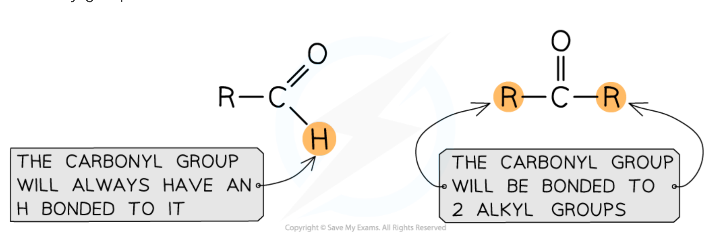
Nomenclature and formulae
命名时，carbonyl carbon 在 aldehyde 中总是 carbon 1，aldehyde suffix 为 -al，不需要再写 locant。例如：
- \(\ce{HCHO}\)：methanal；
- \(\ce{CH3CHO}\)：ethanal；
- \(\ce{CH3CH2CHO}\)：propanal。
Ketone 使用 suffix -one，必须给出 carbonyl position：
- \(\ce{CH3COCH3}\)：propanone；
- \(\ce{CH3COCH2CH3}\)：butan-2-one；
- \(\ce{CH3COCH2CH2CH3}\)：pentan-2-one。
考试中要能在 molecular formula、structural formula、displayed formula 和 skeletal formula 之间转换。Skeletal formula 中的 carbonyl carbon 和 oxygen 仍需明确表示。
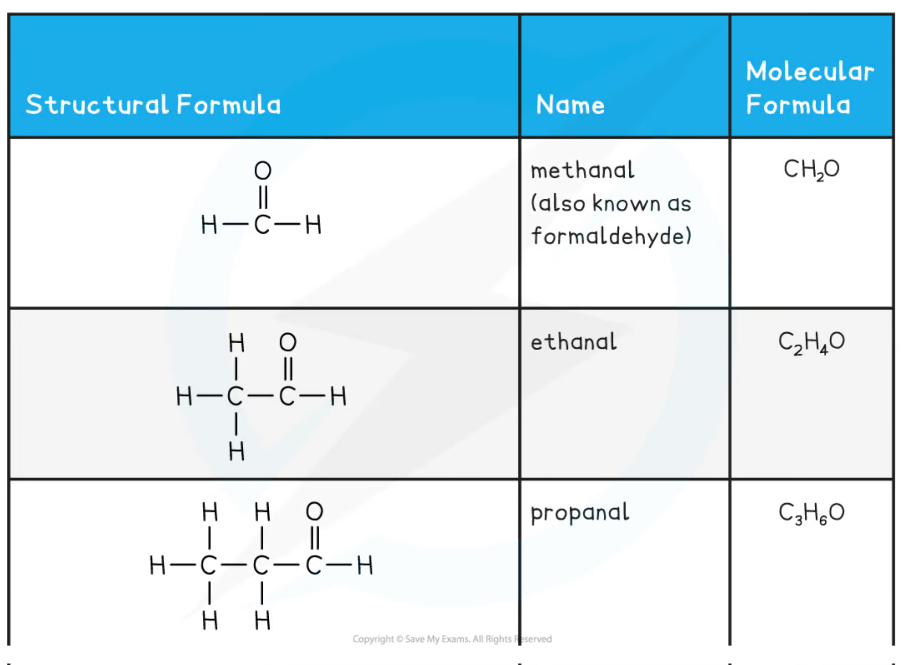
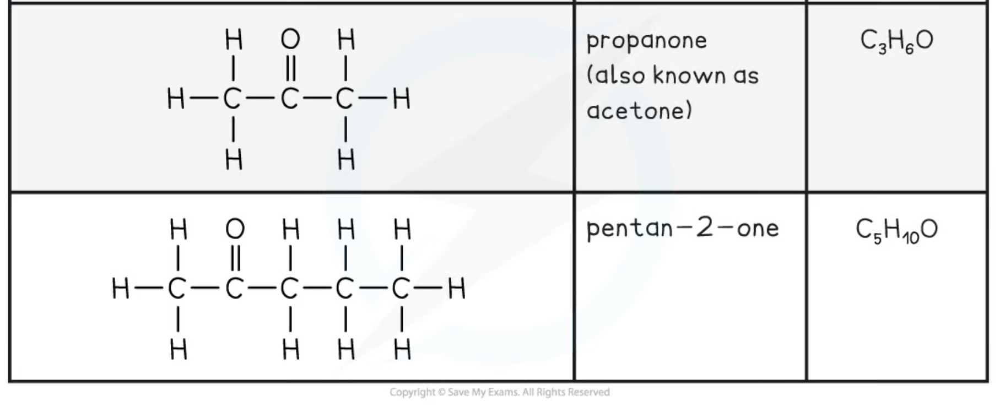
15.7 Physical properties
Intermolecular forces
Carbonyl oxygen 比 carbon 更 electronegative，因此 \(\ce{C=O}\) bond 是 strongly polarised：carbonyl carbon 带 \(\delta+\)，oxygen 带 \(\delta-\)。
所以 aldehydes 和 ketones 分子之间存在：
- permanent dipole-dipole interactions；
- London forces。
但它们的 molecules 没有 \(\ce{O-H}\) 或 \(\ce{N-H}\) bond，不能彼此形成 intermolecular hydrogen bonds。因此与相对分子质量相近的 alcohol 相比，carbonyl compound 通常有 lower boiling temperature。
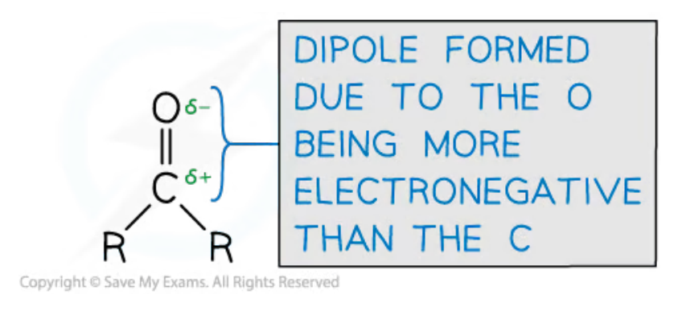
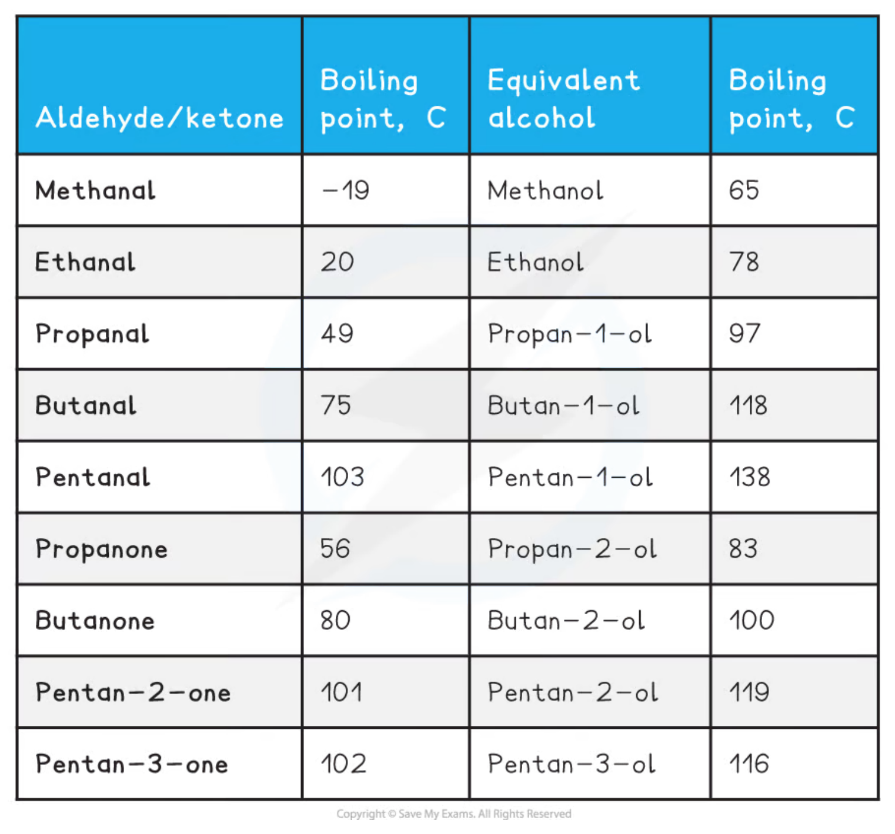
Hydrogen bonding with water
虽然 carbonyl molecules 之间不能 hydrogen bond，但 carbonyl oxygen 有 lone pairs，可以作为 hydrogen-bond acceptor 与 water 的 \(\delta+\) hydrogen 形成 hydrogen bonds。
因此：
- smaller aldehydes and ketones 通常 soluble in water；
- 随着 hydrocarbon chain 变长，London forces 与 hydrophobic chain effect 变强；
- 当 hydrocarbon part 足够大时，carbonyl 与 water 形成的 hydrogen bonds 不足以补偿被破坏的 water-water hydrogen bonds，solubility 降低。
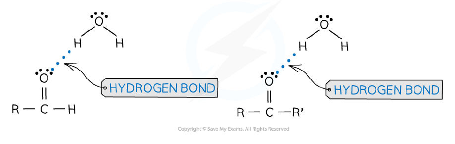
15.8 Reactions of carbonyl compounds
Oxidation of aldehydes and ketones
Acidified dichromate(VI)
Aldehydes 可被 acidified potassium dichromate(VI) 氧化为 carboxylic acids；equation 中 oxidising agent 可简写为 \(\ce{[O]}\)：
\[ \ce{RCHO + [O] -> RCOOH} \]
常用 reagent 是 \(\ce{K2Cr2O7(aq) / H2SO4(aq)}\)，并 gently warm。positive observation 是 orange dichromate(VI) 变为 green，表示 chromium(VI) 被还原。
Ketones 对温和 oxidation resistant，因为 carbonyl carbon 没有可直接被氧化的 hydrogen。用很强的 oxidising conditions 可能发生 C-C bond cleavage，属于 destructive oxidation。
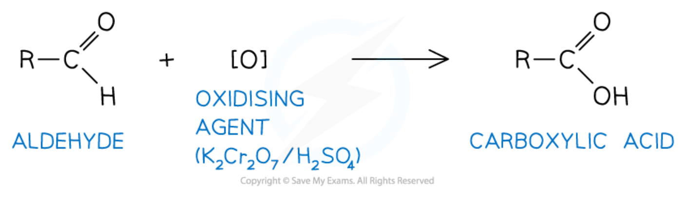
Tollens’ reagent
Tollens’ reagent 是 ammoniacal silver nitrate，含有 colourless complex ion \(\ce{[Ag(NH3)2]+}\)。Aldehyde gently warmed with Tollens’ reagent 时：
- aldehyde 被 oxidised to carboxylic acid；
- \(\ce{Ag+}\) 被 reduced to metallic silver；
- test tube 内壁形成 silver mirror。
Ketone 通常没有 reaction，因此没有 silver mirror。这是区分 aldehyde 和 ketone 的常用 test。
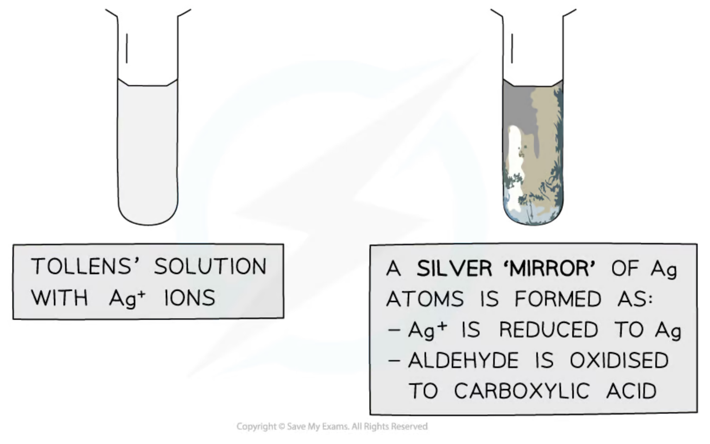
Fehling’s / Benedict’s solution
在 specification 中，Fehling’s or Benedict’s solution 都可用于 aldehyde oxidation test：
- Fehling’s solution 起始为 clear blue，含 copper(II) complex ions；
- warm with an aldehyde 后，\(\ce{Cu^{2+}}\) 被 reduced to \(\ce{Cu+}\)；
- 形成 brick-red precipitate of \(\ce{Cu2O}\)；
- ketone 不发生 reaction，solution remains blue。
Benedict’s solution 也含 copper(II) ions，但 ligand / alkaline medium 不同；exam answer 应写出 reagent 的名称和清晰 colour change。
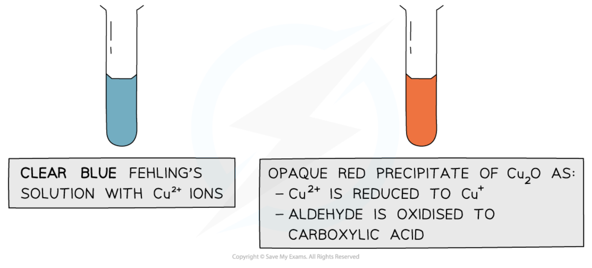
Distinguishing an aldehyde from a ketone
| Test | Aldehyde | Ketone |
|---|---|---|
| acidified dichromate(VI), warm | orange \(→\) green | no visible change |
| Tollens’ reagent, warm | silver mirror | no visible change |
| Fehling’s / Benedict’s, warm | brick-red \(\ce{Cu2O}\) precipitate | solution remains blue |
这些 tests 的共同 reasoning 是：aldehydes can be oxidised relatively easily，而 ketones 通常不能在这些 conditions 下被 oxidised。
Reduction with lithium tetrahydridoaluminate(III)
Products and conditions
Lithium tetrahydridoaluminate(III)，也称 lithium aluminium hydride，formula \(\ce{LiAlH4}\)，在 dry ether (ethoxyethane) 中作 reducing agent。Equation 中 reducing agent 可简写为 \(\ce{[H]}\)：
\[ \ce{RCHO + 2[H] -> RCH2OH} \]
aldehyde 被 reduced 为 primary alcohol。
\[ \ce{RC(O)R' + 2[H] -> RCH(OH)R'} \]
ketone 被 reduced 为 secondary alcohol。Hydride ion \(\ce{:H-}\) 是 nucleophile，reaction 可视为 carbonyl 上的 nucleophilic addition，随后 protonation。
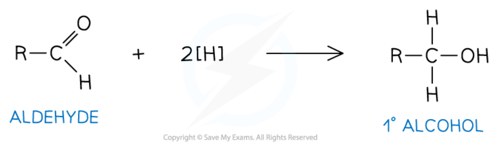
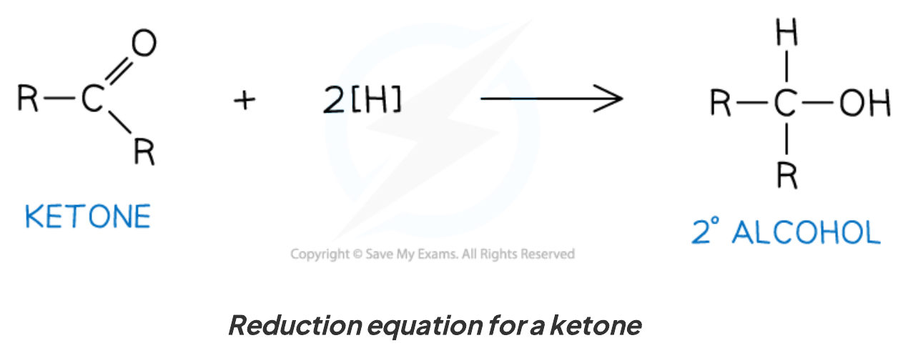
Nucleophilic addition
Why the carbonyl carbon is attacked
Carbonyl group 的 polarity 是 nucleophilic addition 的基础：
\[ \ce{R2C^{\delta+}=O^{\delta-}} \]
由于 oxygen 更 electronegative，carbonyl carbon 带 \(\delta+\)，容易受到 nucleophile 的 lone pair attack。Mechanism 中应画：
- nucleophile lone pair 指向 carbonyl carbon；
- \(\ce{C=O}\) \(π\) bond 的 electron pair 移到 oxygen，形成 \(\ce{O-}\)；
- negatively charged oxygen 从 solvent 或 HCN 得到 proton，形成 alcohol group。
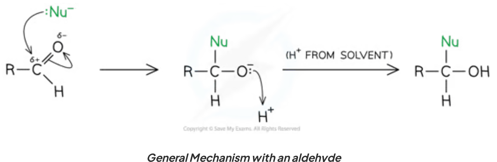
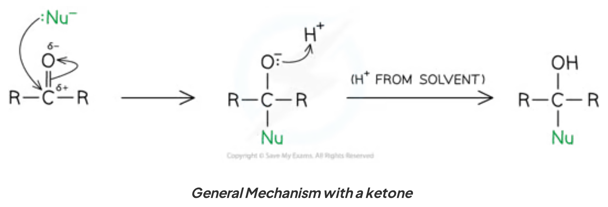
Addition of HCN and optical activity
在 HCN in the presence of KCN 条件下，\(\ce{CN-}\) 是 nucleophile，进攻 carbonyl carbon。Reaction 通常分两步：
- \(\ce{CN-}\) lone pair attack carbonyl carbon，\(\ce{C=O}\) electrons move to oxygen；
- intermediate 的 \(\ce{O-}\) 从 HCN、water 或 dilute acid 得到 \(\ce{H+}\)，形成 hydroxynitrile。
例如 ethanal 形成 2-hydroxypropanenitrile：
\[ \ce{CH3CHO + HCN -> CH3CH(OH)CN} \]
Nitrile group 是 priority functional group，因此 suffix 使用 -nitrile；\(\ce{-OH}\) 作为 prefix 写成 hydroxy-。
如果 starting carbonyl 是 aldehyde（例如 ethanal），carbonyl carbon 两侧的 groups 不同，addition 后可产生 new chiral centre。由于 planar carbonyl 的 two faces 等价，\(\ce{CN-}\) 可从 either face attack，通常得到 equal amounts of enantiomers，即 racemic mixture，表现为 no net optical activity。
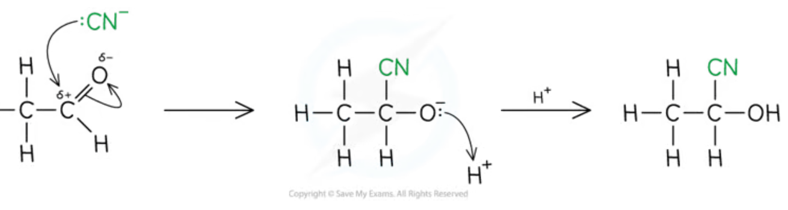
Qualitative carbonyl tests
2,4-Dinitrophenylhydrazine (2,4-DNPH)
2,4-Dinitrophenylhydrazine，简称 2,4-DNPH，用于检验 carbonyl group：
- aldehyde 或 ketone 与 2,4-DNPH 发生 condensation reaction；
- positive result 是 deep-orange / orange precipitate；
- carboxylic acids 和 esters 不给 positive 2,4-DNPH test；
- precipitate 可 recrystallise，再测 melting temperature，与 literature data 比较，从而 identify unknown carbonyl compound。
Specification 明确说明不要求书写 2,4-DNPH reaction equation，但要理解 test result 和 derivative melting point 的用途。
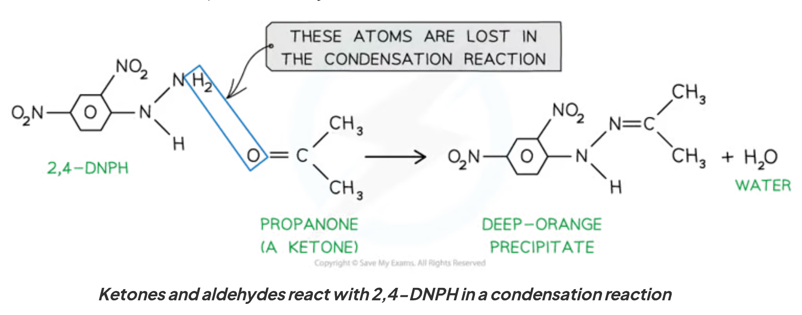
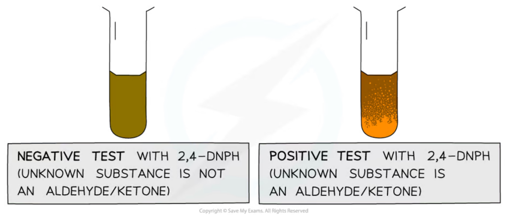
Iodoform test
Iodoform test 使用 iodine in alkaline solution，通常 gently warm。含有 methyl ketone group \(\ce{CH3CO-}\) 的 compounds 会生成 yellow precipitate of tri-iodomethane (iodoform), \(\ce{CHI3}\)。
Positive compounds 包括：
- methyl ketones，例如 propanone；
- ethanal，因为它含有 equivalent 的 \(\ce{CH3CO-}\) arrangement；
- alcohols containing \(\ce{R-CH(OH)-CH3}\)，因为它们在 test conditions 下可先 oxidise 为 methyl ketones；
- ethanol 是会给 positive result 的 primary alcohol。
对 methyl ketone，overall ionic equation 可写成：
\[ \ce{CH3COCH3 + 3I2 + 4OH- -> CH3COO- + CHI3 + 3I- + 3H2O} \]
Observation 应写成 yellow precipitate，不要只写 iodine colour disappears。
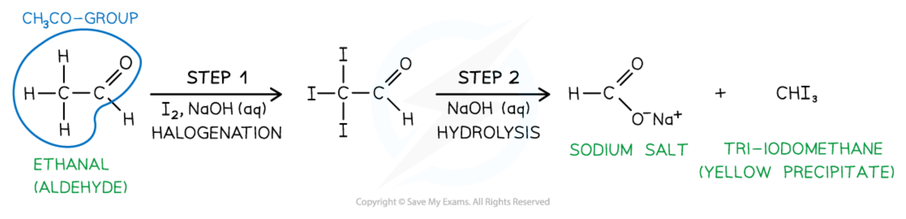
Cross-link: acid-catalysed iodination of propanone
Note 的最后一页还介绍了 acid conditions 下 propanone 与 iodine 的 reaction：
\[ \ce{CH3COCH3 + I2 ->[H+] CH3COCH2I + H+ + I-} \]
生成的 iodopropanone 是 colourless，yellow-brown iodine colour 会逐渐 fade。这是一个很适合 colorimetry monitoring 的 reaction，可用于测定 rate equation 和 reaction orders；它属于 Topic 11 Kinetics 的 cross-link，而不是 15B 的新增 reaction requirement。
Unit 4 Past-paper practice · Topic 15B
以下题目来自 PastPaper/Unit4 的 Pearson Edexcel International Advanced Level Chemistry question papers。题干、选项和题目要求按原题保留；答案参考对应 mark scheme，按 mark point 列出。共整理 10 组 structured practice。
2024 May · Unit 4A · Question 18 · 16 marks
Source: QP-202405-Chemistry-U4A-Level-...pdf，pp. 18–22；对应 MS-202405-Chemistry-U4A-Level-...pdf。
18 This question is about some reactions of propanal, CH\(_3\)CH\(_2\)CHO, and propanone, CH\(_3\)COCH\(_3\).
(a) Propanal and propanone react similarly with lithium tetrahydridoaluminate(III). Complete the table about these reactions. (4)
Give the formula of lithium tetrahydridoaluminate(III), the essential reaction conditions, the type of reaction, and the names of the organic products with propanal and propanone.
(b) State what would be seen when separate samples of propanal and propanone are warmed with Tollens’ reagent. (2)
(c) When propanone reacts with iodine in the presence of aqueous sodium hydroxide, a yellow precipitate is observed. Write an equation for this reaction. Include state symbols. (3)
(d) Propanal and propanone both react with 2,4-dinitrophenylhydrazine. The products of these reactions may be used to distinguish between separate samples of propanal and propanone. Describe, in outline, the laboratory procedure for doing this. (3)
(e) Propanone, CH\(_3\)COCH\(_3\), reacts with hydroxylamine, NH\(_2\)OH, under mildly acidic conditions. The first stage of the reaction is a nucleophilic addition. Add curly arrows to complete the mechanism for this reaction. (4)
Markscheme-based answer · 得分点
- \(\ce{LiAlH4}\); dry ether / anhydrous conditions; reduction; propan-1-ol from propanal and propan-2-ol from propanone. [4]
- Propanal gives a silver mirror; propanone gives no visible change. [2]
- \(\ce{CH3COCH3(aq) + 3I2(aq) + 4OH-(aq) -> CH3COO-(aq) + CHI3(s) + 3I-(aq) + 3H2O(l)}\). [3]
- Add 2,4-DNPH to separate samples; both give an orange/yellow precipitate. Filter, wash and recrystallise each derivative to purify it; measure the melting temperature and compare with reference data to identify the original carbonyl compound. [3]
- \(\ce{NH2OH}\) attacks the \(\delta+\) carbonyl carbon using a lone pair; the \(\ce{C=O}\) \(\pi\) electrons move to oxygen; proton transfers occur under mildly acidic conditions; the arrows and intermediate must show correct charge and lone-pair movement. [4]
2024 October · Unit 4A · Question 18 · 14 marks
Source: QP-202410-Chemistry-U4A-Level-...pdf，pp. 16–18；对应 MS-202410-Chemistry-U4A-Level-...pdf。
18 This question is about carbonyl compounds such as ethanal, CH\(_3\)CHO.
Ethanal reacts with the weak acid hydrogen cyanide to form a racemic mixture of hydroxynitriles. A small amount of sodium hydroxide solution, NaOH(aq), is also added to the reaction mixture.
(a)(i) Complete the mechanism for the reaction. Include curly arrows, the structure of the intermediate, and any relevant lone pairs and dipoles. (4)
(a)(ii) Explain why a small amount of sodium hydroxide solution is added to the reaction mixture, by considering the nature of the attacking species in the slow step. (2)
(b) Deduce the rate equation for the reaction using the mechanism in (a)(i). (1)
(c) Sketch a line on the axes to show how the concentration of ethanal affects the rate of this reaction. (1)
(d) Carbonyl compounds can be identified from their 2,4-dinitrophenylhydrazine derivatives. Describe this process, including observations in the formation of the derivative, steps used to separate and purify the derivative and the purpose of each step, and how the derivative is used to identify the original carbonyl compound. Detailed descriptions of practical techniques are not required. (6)
Markscheme-based answer · 得分点
- \(\ce{CN-}\) attacks the \(\delta+\) carbonyl carbon; the \(\ce{C=O}\) \(\pi\) electrons move to oxygen; the intermediate is \(\ce{CH3CH(O-)CN}\); the oxygen is protonated by HCN. [4]
- \(\ce{OH-}\) reacts with HCN to form more \(\ce{CN-}\); \(\ce{CN-}\) is the stronger nucleophile and is the attacking species in the slow step. [2]
- \(\text{rate}=k[\ce{CH3CHO}][\ce{CN-}]\). [1]
- A straight line through the origin because the reaction is first order in ethanal. [1]
- Carbonyl compounds give an orange/yellow precipitate with 2,4-DNPH. Filter to separate the solid, wash to remove soluble impurities, and recrystallise to purify the derivative. Measure its melting temperature and compare with literature values; the matching derivative identifies the original carbonyl compound. [6]
2023 October · Unit 4A · Question 14 · 9 marks
Source: QP-202310-Chemistry-U4A-Level-...pdf，pp. 16–17；对应 MS-202310-Chemistry-U4A-Level-...pdf。
14 This question is about the nucleophilic addition reaction between ethanal and hydrogen cyanide in the presence of potassium cyanide as a catalyst.
The equation for the reaction is shown: \(\ce{CH3CHO + HCN -> CH3CH(OH)CN}\).
(a)(i) Give the IUPAC name of the organic product. (1)
(a)(ii) Complete the mechanism for this two-step reaction, showing the structure of the intermediate and including curly arrows, relevant lone pairs and dipoles. (4)
(a)(iii) Justify the use of the term ‘nucleophilic addition’ to describe the mechanism of this reaction. (2)
(b) Explain why the product of the reaction is not optically active even though it contains a chiral carbon atom. (2)
Markscheme-based answer · 得分点
- 2-hydroxypropanenitrile. [1]
- \(\ce{CN-}\) attacks the carbonyl carbon; the \(\ce{C=O}\) \(\pi\) electrons move to oxygen; the intermediate is protonated by HCN; \(\ce{CN-}\) is regenerated. [4]
- The attacking species is a nucleophile and the reaction adds atoms/groups across the \(\ce{C=O}\) double bond without elimination. [2]
- The carbonyl carbon is planar and \(\ce{CN-}\) attacks from either side, producing equal amounts of the two enantiomers; the rotations cancel in the racemic mixture. [2]
2022 May · Unit 4A · Question 17 · 11 marks
Source: QP-202205-Chemistry-U4A-Level-...pdf，pp. 15–17；对应 MS-202205-Chemistry-U4A-Level-...pdf。
17 This question is about carbonyl compounds.
(a) Three carbonyl compounds, A, B and C, are straight-chain structural isomers with the formula C\(_5\)H\(_{10}\)O. Only isomer A reacts with Tollens’ reagent to give a silver mirror. Only isomer B reacts with iodine in the presence of alkali to produce pale yellow crystals. Draw the displayed structures of these three isomers. (3)
(b) Another carbonyl compound, propanal, reacts with HCN in the presence of KCN to form a racemic mixture of two optical isomers of \(\ce{CH3CH2CH(OH)CN}\).
(b)(i) Give the IUPAC name for \(\ce{CH3CH2CH(OH)CN}\). (1)
(b)(ii) Describe how you could distinguish between pure samples of the two optical isomers. (1)
(b)(iii) Explain, with reference to the reaction mechanism, why this reaction produces a racemic mixture. (2)
(c)(i) Propanone, an isomer of propanal, also reacts with HCN in the presence of KCN. Draw the skeletal formula of the product of this reaction. (1)
(c)(ii) State why the product formed in (c)(i) does not show optical isomerism. (1)
(d)(i) Identify the chemical shift range and carbon environment of one peak expected in both the propanal and propanone spectra. (1)
(d)(ii) State the number of peaks expected in each \(^{13}\)C NMR spectrum. (1)
Markscheme-based answer · 得分点
- A = pentanal, \(\ce{CH3CH2CH2CH2CHO}\); B = pentan-2-one, \(\ce{CH3COCH2CH2CH3}\); C = pentan-3-one, \(\ce{CH3CH2COCH2CH3}\). [3]
- 2-hydroxybutanenitrile. [1]
- Use a polarimeter: the pure enantiomers rotate plane-polarised light in opposite directions. [1]
- The carbonyl carbon is planar; \(\ce{CN-}\) attacks from either side, giving an equimolar / racemic mixture. [2]
- Product: \(\ce{CH3C(OH)(CN)CH3}\). [1]
- The central carbon is bonded to two identical \(\ce{CH3}\) groups, so it is not bonded to four different groups and is not chiral. [1]
- A peak in the range 190–225 ppm assigned to the \(\ce{C=O}\) carbon. [1]
- Propanal: 3 peaks; propanone: 2 peaks. [1]
2021 January · Unit 4A · Question 19 · 16 marks
Source: QP-202101-Chemistry-U4A-Level-...pdf，pp. 18–20；对应 MS-202101-Chemistry-U4A-Level-...pdf。
19 This question is about carbonyl compounds.
(a) The skeletal formula of menthone is shown. Give the molecular formula of menthone. (1)
(b) Ethanal, \(\ce{CH3CHO}\), reacts with hydrogen cyanide in the presence of cyanide ions to form 2-hydroxypropanenitrile. Draw the mechanism for this reaction. Include curly arrows, and any relevant lone pairs and dipoles. (4)
(c)(i) A carbonyl compound, F, has the molecular formula C\(_6\)H\(_{12}\)O. F reacts with iodine in an alkaline solution to give a pale yellow precipitate. Give the name or formula of the group in F identified by this test. (1)
(c)(ii) Draw the skeletal formulae of the four possible structures of carbonyl compound F. (2)
(c)(iii) The \(^{13}\)C NMR spectrum of F has four peaks. Identify F by drawing its displayed formula. Justify your answer by labelling the carbon atoms or groups of carbon atoms responsible for the four peaks in the spectrum. (2)
(d) Explain, in terms of all the intermolecular forces involved, why butanal has a higher boiling temperature than pentane but a lower boiling temperature than propanoic acid. (6)
Markscheme-based answer · 得分点
- Menthone: C\(_{10}\)H\(_{18}\)O. [1]
- \(\ce{CN-}\) attacks the \(\delta+\) carbonyl carbon; the \(\ce{C=O}\) \(\pi\) electrons move to oxygen; show the correct \(\ce{O-}\) intermediate and proton transfer from HCN. [4]
- The methyl ketone group, \(\ce{CH3CO-}\). [1]
- The four methyl-ketone isomers are hexan-2-one, 3-methylpentan-2-one, 4-methylpentan-2-one and 3,3-dimethylbutan-2-one. [2]
- F is 3,3-dimethylbutan-2-one, \(\ce{CH3COC(CH3)3}\); four \(^{13}\)C environments arise from the carbonyl carbon, the methyl next to \(\ce{C=O}\), the quaternary carbon and the three equivalent methyl groups. [2]
- All three substances have London forces. Butanal also has permanent dipole–dipole interactions because of its polar \(\ce{C=O}\) bond, so it boils above non-polar pentane. Propanoic acid molecules form strong hydrogen-bonded dimers as well as London forces and dipole interactions, so it boils at a higher temperature than butanal. [6]
2021 October · Unit 4A · Question 16 · 20 marks
Source: QP-202110-Chemistry-U4A-Level-...pdf，pp. 12–14；对应 MS-202110-Chemistry-U4A-Level-...pdf。
16 Compound X is used by mammals as an alternative energy source to sugars. X is a compound of carbon, hydrogen and oxygen only.
(a)(i) Complete combustion of a 2.50 g sample of X in dry oxygen produced 4.31 g of carbon dioxide and 1.32 g of water as the only products. Give a reason why the oxygen used must be dry. (1)
(a)(ii) Show that the empirical formula of X is C\(_4\)H\(_6\)O\(_3\). You must show your working. (5)
(b) Compound X gave an orange precipitate with Brady’s reagent (2,4-dinitrophenylhydrazine) but no reaction with Tollens’ reagent. When X was added to a solution of sodium hydrogencarbonate, effervescence occurred and the gas evolved turned limewater cloudy. The \(^{13}\)C NMR spectrum of X had only four peaks.
(b)(i) Deduce the two possible structures of X, showing how this information supports your answer. (6)
(b)(ii) Give a chemical test which would allow you to distinguish between the two compounds. Include the reagents required and the result for each compound. (3)
(c) A simplified high-resolution proton (\(^1\)H) NMR spectrum of compound X is shown.
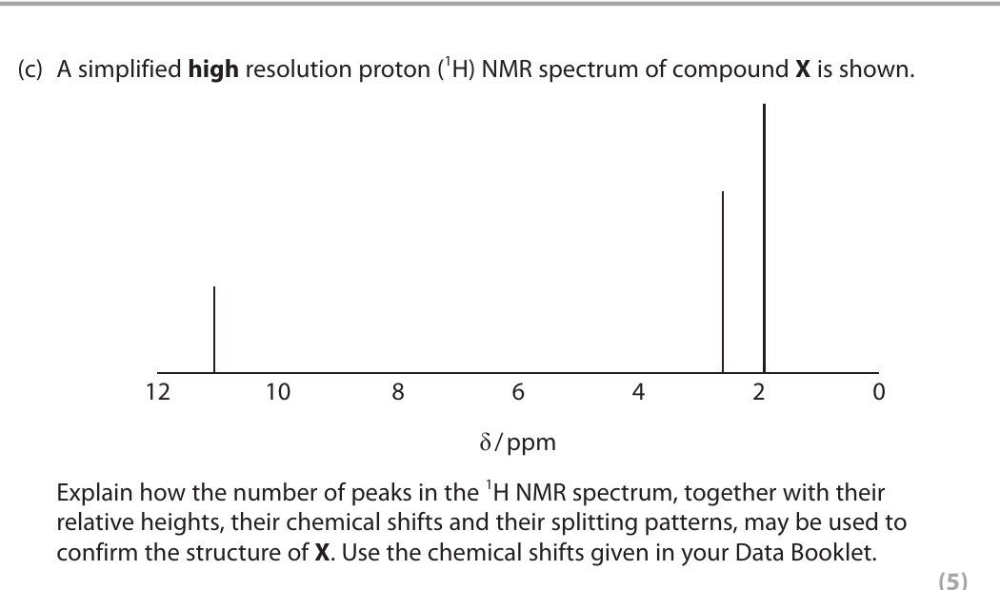
Explain how the number of peaks in the \(^1\)H NMR spectrum, together with their relative heights, their chemical shifts and their splitting patterns, may be used to confirm the structure of X. Use the chemical shifts given in your Data Booklet. (5)
Markscheme-based answer · 得分点
- The orange Brady’s reagent precipitate shows a ketone carbonyl; no Tollens’ reaction excludes an aldehyde. Effervescence with \(\ce{NaHCO3}\) and limewater turning cloudy shows a carboxylic acid. [2]
- The two structures are 3-oxobutanoic acid, \(\ce{CH3COCH2COOH}\), and 2-oxobutanoic acid, \(\ce{CH3CH2COCOOH}\). Each has formula C\(_4\)H\(_6\)O\(_3\) and four carbon environments. [4]
- Use iodine in alkaline solution. 3-oxobutanoic acid contains \(\ce{CH3CO-}\) and gives a pale yellow \(\ce{CHI3}\) precipitate; 2-oxobutanoic acid does not give the iodoform precipitate. [3]
- The combustion data give the empirical formula C\(_4\)H\(_6\)O\(_3\): determine C from \(\ce{CO2}\), H from \(\ce{H2O}\) and O by difference from the original sample mass. Dry oxygen prevents water vapour from affecting the mass data. [6]
- From the spectrum, the three signals correspond to a carboxylic-acid proton around 10–12 ppm, a methylene environment near 2–3 ppm and a methyl environment near 2 ppm; relative heights and splitting patterns agree with the selected structure. [5]
2023 January · Unit 4A · Question 19 · 8 marks
Source: QP-202301-Chemistry-U4A-Level-...pdf，pp. 20–21；对应 MS-202301-Chemistry-U4A-Level-...pdf。
19 Carbonyl compounds are usually reduced in the laboratory using complex metal hydrides such as lithium tetrahydridoaluminate(III), LiAlH\(_4\).
The metal hydrides react by supplying hydride ions, H\(^-\), which then react with the carbonyl group to form an intermediate. The addition of a strong acid in aqueous solution to the intermediate produces the reduction product.
(a) State the essential condition for using LiAlH\(_4\). (1)
(b) Complete the mechanism for the reduction of propanone with LiAlH\(_4\), showing the structure of the intermediate and of the final product. Include curly arrows, and relevant lone pairs and dipoles. (4)
(c) Explain why LiAlH\(_4\) reduces carbonyl compounds but not alkenes, even though both types of compound have \(\pi\) bonds. (3)
Markscheme-based answer · 得分点
- Anhydrous / dry conditions, commonly dry ether. [1]
- Hydride attacks the \(\delta+\) carbonyl carbon; the \(\ce{C=O}\) \(\pi\) electrons move to oxygen to form an alkoxide intermediate; aqueous strong acid protonates the alkoxide to give propan-2-ol. [4]
- The \(\ce{C=O}\) bond is polar, so the carbonyl carbon is electrophilic and is attacked by hydride. The \(\ce{C=C}\) bond in an alkene is non-polar / has no \(\delta+\) carbon, so hydride does not attack it under these conditions. [3]
2020 January · Unit 4A · Question 17 · 8 marks
Source: QP-202001-Chemistry-U4A-Level-...pdf，pp. 16–17；对应 MS-202001-Chemistry-U4A-Level-...pdf。
17 Compare and contrast the reactions of propanal and propanone with one oxidising agent, one reducing agent and 2,4-dinitrophenylhydrazine.
In your answer include any relevant observations for the reactions you discuss and equations for any reactions classified as oxidation, using [O] for the oxygen from the oxidising agent.
Markscheme-based answer · 得分点
- Both compounds react with 2,4-DNPH to form an orange/yellow precipitate of a 2,4-dinitrophenylhydrazone derivative. [1]
- Propanal is oxidised by acidified dichromate(VI) on warming to propanoic acid: \(\ce{CH3CH2CHO + [O] -> CH3CH2COOH}\); the solution changes from orange to green. [2]
- Propanone does not react under these mild oxidation conditions. [1]
- Both compounds are reduced by \(\ce{LiAlH4}\) in dry ether: propanal gives propan-1-ol and propanone gives propan-2-ol. [2]
- The contrast is that aldehydes are readily oxidised, whereas ketones are resistant to oxidation without C–C bond cleavage; both carbonyl compounds undergo reduction and 2,4-DNPH condensation. [2]
2018 January · Unit 4A · Question 21 · 14 marks
Source: QP-201801-Chemistry-U4A-Level-...pdf，pp. 15–18；对应 MS-201801-Chemistry-U4A-Level-...pdf。
21 This question is about the organic reactions shown in the diagram.
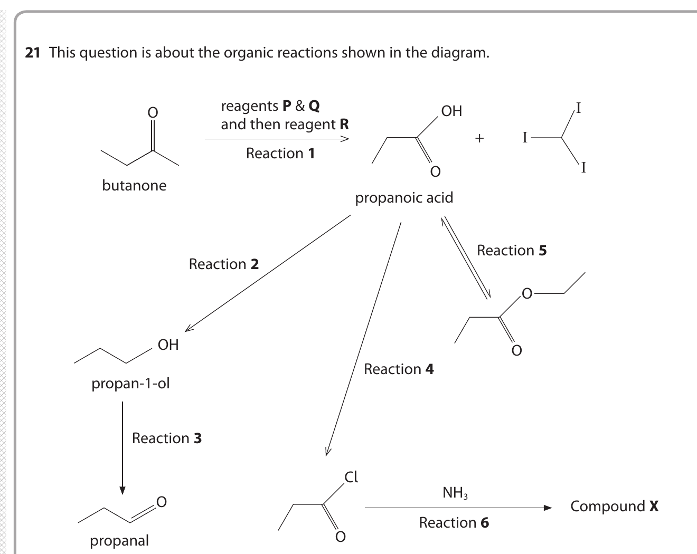
(a)(i) Name reagents P and Q used in Reaction 1. (2)
(a)(ii) Identify reagent R used in Reaction 1 and explain why it is needed. (2)
(a)(iii) Name the second product formed in Reaction 1. (1)
(a)(iv) Identify the reagent and the solvent required for Reaction 2, stating the essential condition for the reaction. (2)
(a)(v) The reagents used in Reaction 3 are potassium dichromate(VI) and sulfuric acid. State how this reaction must be carried out to ensure that the main product is propanal. (1)
(a)(vi) Identify the reagent required for Reaction 4. (1)
(a)(vii) Name compound X formed in Reaction 6. (1)
(b)(i) The base peak in the mass spectrum of butanone is at m/e = 43 while the base peak in propanal is at m/e = 29. Identify the species responsible for these two peaks. (2)
(b)(ii) Explain, by quoting values from the Data Booklet, how infrared spectroscopy could be used to distinguish between butanone and propanal. (2)
Markscheme-based answer · 得分点
- Reaction 1: P is iodine and Q is aqueous sodium hydroxide; R is dilute sulfuric acid, used to acidify the propanoate. The other product is iodoform, \(\ce{CHI3}\). [5]
- Reaction 2: \(\ce{LiAlH4}\) in dry ether; the essential condition is anhydrous conditions. [2]
- Reaction 3: warm gently and distil the propanal as it forms, preventing further oxidation to propanoic acid. [1]
- Reaction 4 uses \(\ce{PCl5}\); Reaction 6 gives propanamide, \(\ce{CH3CH2CONH2}\). [2]
- The m/e 43 fragment is \(\ce{CH3CO+}\) and the m/e 29 fragment is \(\ce{CHO+}\) / \(\ce{HCO+}\). [2]
- Both show a strong \(\ce{C=O}\) absorption near 1680–1750 cm\(^{-1}\); propanal also shows the aldehyde \(\ce{C-H}\) absorption around 2720–2820 cm\(^{-1}\), which is absent from butanone. [2]
2025 May · Unit 4A · Question 1(a)–(e) · 5 marks
Source: QP-202505-Chemistry-U4A-Level-...pdf，pp. 2–3；对应 MS-202505-Chemistry-U4A-Level-...pdf。
1 This question is about carbonyl compounds.
Propanone reacts with hydrogen cyanide, HCN, in the presence of potassium cyanide, KCN.
(a) How is this reaction classified? (1)
A electrophilic addition
B electrophilic substitution
C nucleophilic addition
D nucleophilic substitution
(b) What is the first step in the mechanism of the reaction between propanone and a mixture of HCN and KCN? (1)
A the lone pair of electrons on the carbon of \(\ce{CN-}\) attacking the carbonyl \(\ce{C^{delta+}}\) of propanone
B the lone pair of electrons on the nitrogen of \(\ce{CN-}\) attacking the carbonyl \(\ce{C^{delta+}}\) of propanone
C the lone pair of electrons on the oxygen of propanone attacking the \(\ce{C^{delta+}}\) of HCN
D the lone pair of electrons on the oxygen of propanone attacking the \(\ce{H^{delta+}}\) of HCN
(c) What is the name of the organic product formed in part (a)? (1)
A 2-hydroxy-2-methylpropylamine
B 2-hydroxy-2-methylethylamine
C 2-hydroxy-2-methylethanenitrile
D 2-hydroxy-2-methylpropanenitrile
(d) Which of these carbonyl compounds would produce pale yellow crystals when warmed with iodine in the presence of sodium hydroxide? (1)
A butanone
B butanal
C pentan-3-one
D 2-methylpropanal
(e) What is the formula of the pale yellow crystals formed in part (d)? (1)
A \(\ce{CI4}\)
B \(\ce{CHI3}\)
C \(\ce{CH2I2}\)
D \(\ce{CH3I}\)
Markscheme-based answer · 得分点
- C: \(\ce{CN-}\) is the nucleophile and it adds across the carbonyl group. [1]
- A: the carbon lone pair of \(\ce{CN-}\) attacks the electrophilic carbonyl carbon. [1]
- D: the nitrile carbon is included in the parent chain, giving 2-hydroxy-2-methylpropanenitrile. [1]
- A: butanone contains the methyl ketone group \(\ce{CH3CO-}\). [1]
- B: the pale yellow iodoform precipitate is \(\ce{CHI3}\). [1]
Unit 4 multiple-choice bank · Topic 15B
以下 MCQ 的题干、A–D 选项和答案均直接整理自 PastPaper/Unit4；每道题的 answer 和 explanation 独立隐藏。
2018 January Q15 Some of the physical properties of aldehydes and ketones can be explained by the fact that they
A never form hydrogen bonds.
B form hydrogen bonds in the liquid state but not in aqueous solution.
C form hydrogen bonds in aqueous solution but not in the liquid state.
D form hydrogen bonds in both the liquid state and aqueous solution.
Show answer · 答案 + explanation
Answer: C. Carbonyl oxygen can accept hydrogen bonds from water, but aldehydes and ketones do not have an \(\ce{O-H}\) or \(\ce{N-H}\) bond and therefore do not hydrogen-bond strongly to one another as pure liquids.
2018 January Q16 Which correctly shows the reactions of ethanal and propanone?
| Tollens’ reagent | 2,4-dinitrophenylhydrazine | |
|---|---|---|
| A | both ethanal and propanone react | both ethanal and propanone react |
| B | only ethanal reacts | only propanone reacts |
| C | only propanone reacts | only ethanal reacts |
| D | only ethanal reacts | both ethanal and propanone react |
Show answer · 答案 + explanation
Answer: D. Tollens’ reagent oxidises aldehydes but not ketones, while 2,4-DNPH reacts with both aldehydes and ketones because both contain a carbonyl group.
2020 May Q11 When propanone reacts with iodine in the presence of sodium hydroxide, the precipitate formed has the formula
A \(\ce{CH3I}\)
B \(\ce{CHI3}\)
C \(\ce{CH3COCH2I}\)
D \(\ce{CH3COCI3}\)
Show answer · 答案 + explanation
Answer: B. The alkaline iodine test for a methyl ketone produces yellow iodoform, \(\ce{CHI3}\).
2020 May Q14 An organic compound that reacts with both lithium tetrahydridoaluminate(III) (lithium aluminium hydride) and magnesium could be
A an aldehyde
B a carboxylic acid
C a ketone
D a tertiary alcohol
Show answer · 答案 + explanation
Answer: B. A carboxylic acid reacts with magnesium to release hydrogen and is reduced by \(\ce{LiAlH4}\); aldehydes and ketones do not react with magnesium in this way.
2020 May Q15(a) The following methods can be used to distinguish between pairs of organic compounds with no further tests.
A warm each compound with Fehling’s or Benedict’s solution
B warm each compound with acidified potassium dichromate(VI) solution
C add 2,4-dinitrophenylhydrazine (Brady’s reagent) to each compound
D add a few drops of each compound, drop by drop, to water
Which test would distinguish between 2-methylpropan-2-ol, \(\ce{(CH3)3COH}\), and butanone, \(\ce{CH3CH2COCH3}\)?
A
B
C
D
Show answer · 答案 + explanation
Answer: C. Butanone reacts with 2,4-DNPH to give an orange precipitate, whereas the tertiary alcohol does not contain a carbonyl group and gives no precipitate.
2021 October Q12 An unknown aldehyde may be identified by measuring the melting temperature of the purified precipitate formed in its reaction with
A 2,4-dinitrophenylhydrazine
B Fehling’s solution
C potassium dichromate and sulfuric acid
D Tollens’ reagent
Show answer · 答案 + explanation
Answer: A. 2,4-DNPH forms a solid derivative that can be purified and whose melting temperature can be compared with reference data; the other tests are not used to make an identifying solid derivative.
2025 May Q1(a) How is the reaction between propanone and HCN in the presence of KCN classified?
A electrophilic addition
B electrophilic substitution
C nucleophilic addition
D nucleophilic substitution
Show answer · 答案 + explanation
Answer: C. \(\ce{CN-}\) donates a lone pair to the electrophilic carbonyl carbon and the reaction adds across the \(\ce{C=O}\) bond.
2025 May Q1(d) Which of these carbonyl compounds would produce pale yellow crystals when warmed with iodine in the presence of sodium hydroxide?
A butanone
B butanal
C pentan-3-one
D 2-methylpropanal
Show answer · 答案 + explanation
Answer: A. Butanone contains the \(\ce{CH3CO-}\) methyl ketone group required for the iodoform test; the other listed compounds do not.
Exam checklist
Source note
本页面对应：Note per Chapter/Note per Chapter/4.7 Organic Chemistry Carbonyls.pdf.pdf；考纲范围对应 International-A-Level-Chemistry-Spec 的 15B: Carbonyl compounds（15.6–15.8）。页面中的 note 示意图和真题图示均独立提取并保存到 assets/notes/carbonyls/，便于单独放大和复用。